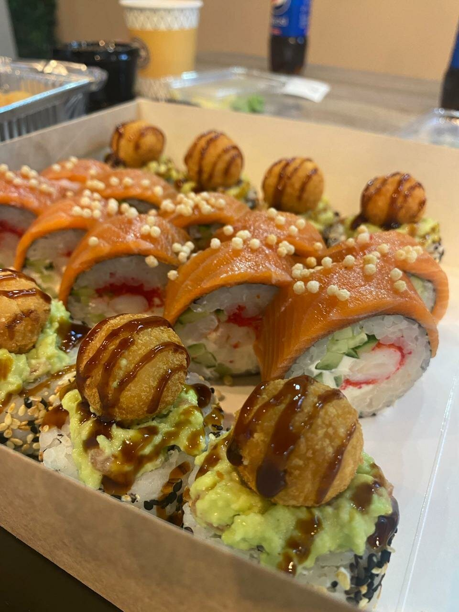
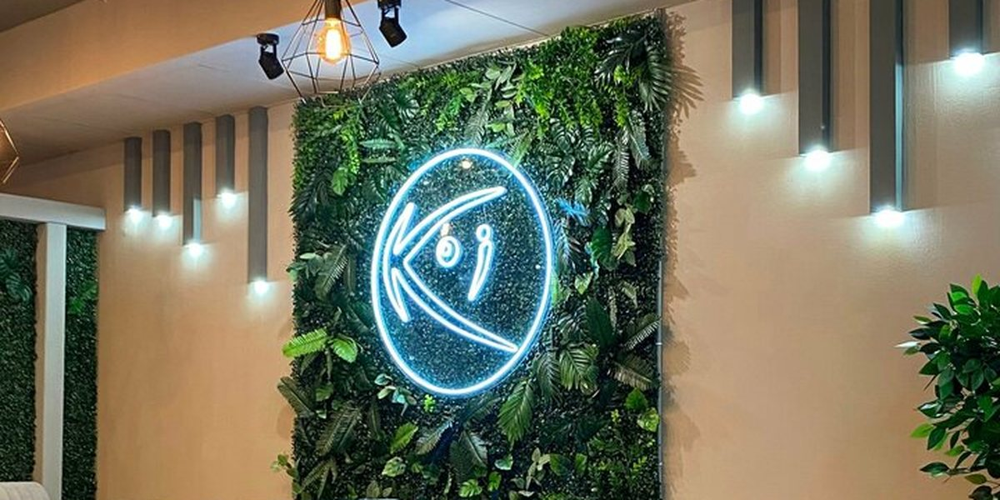
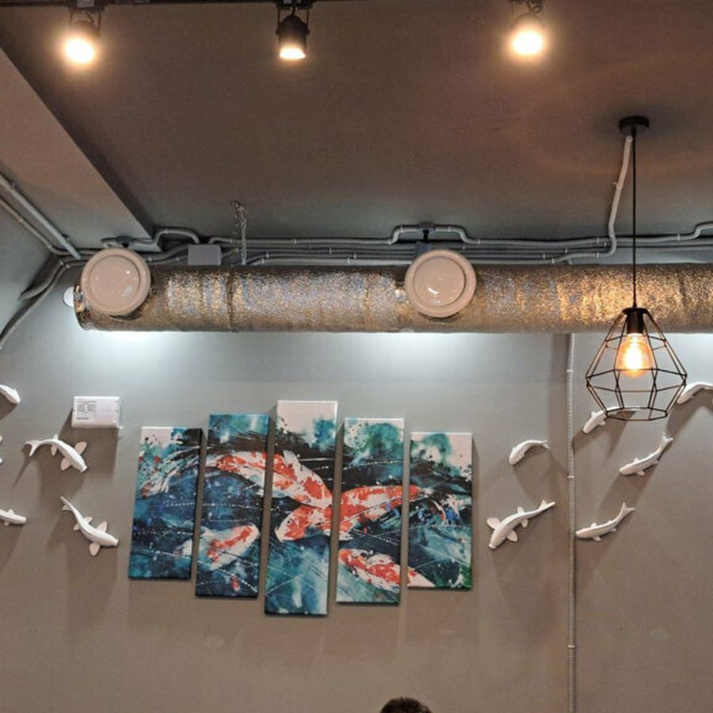
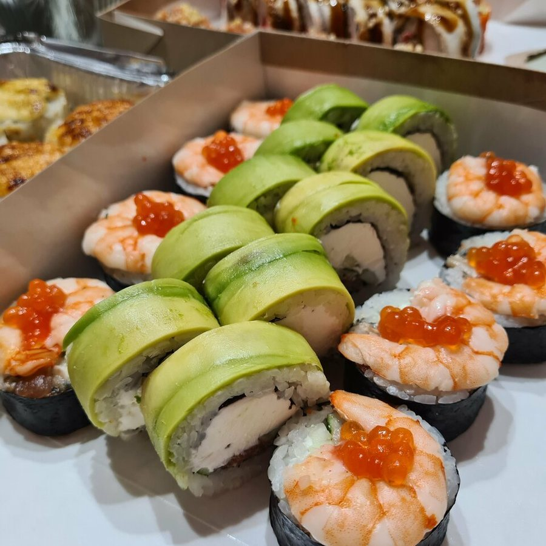
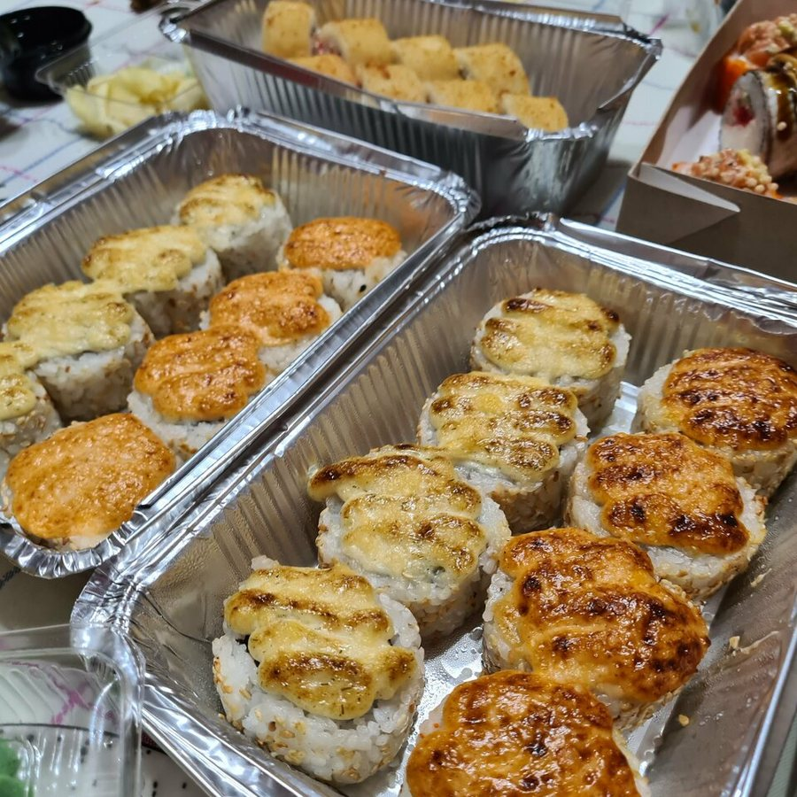
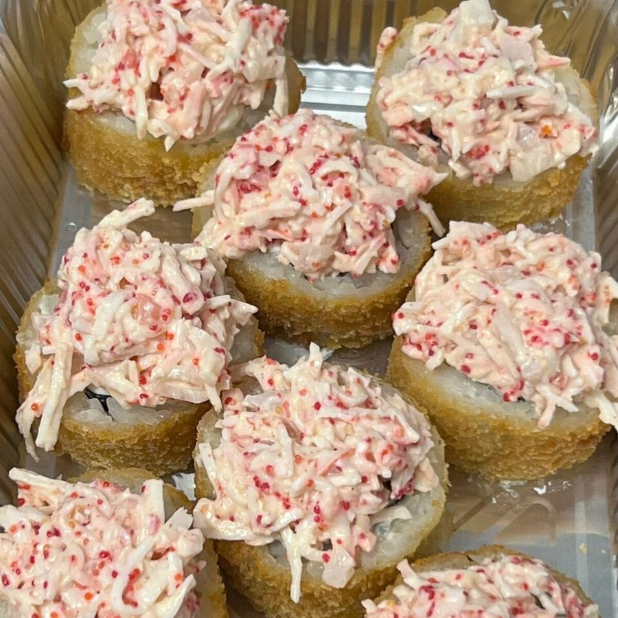
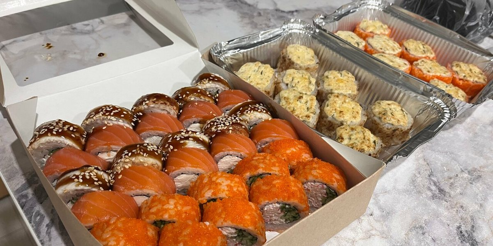
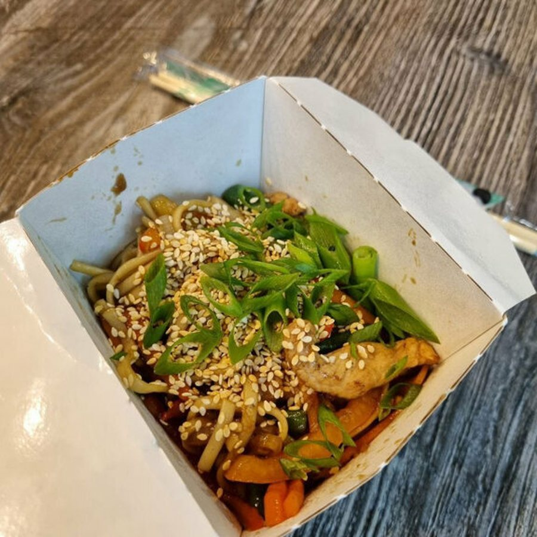
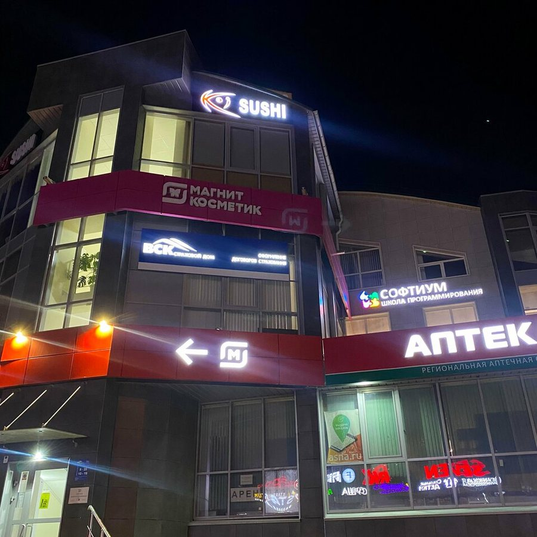

Ирина Парфенова★★★★★
Быстрая доставка, всё приехало свежим и вкусным. Отдельно хочу отметить большой размер роллов, очень много начинки, рекомендую!
Волгоград · бульвар 30-летия Победы, 58А · Семь Ветров
«Кои суши» — суши-бар на бульваре 30-летия Победы: роллы и суши, вок, том ям и кукси. Есть зал, самовывоз и доставка. Гости чаще всего пишут про размер роллов и количество начинки — заведение отвечает в отзывах, что кладёт риса и начинки поровну, в среднем 40 г лосося в ролл.
Ежедневно с 10:00 до 22:00

4,6 из 5 при 248 оценках в Яндекс Картах. Чаще всего гости пишут о еде (103 упоминания, 91% окрашенных — положительные), роллах и суши (73 упоминания, 89%), персонале (29, 78%) и времени ожидания (29, 76%).
Самая обсуждаемая тема после еды в целом: 73 упоминания в отзывах, 89% окрашенных — положительные. Гости отмечают размер роллов и количество начинки.
Так заведение отвечает на отзывы: работают в соотношении 1:1, в среднем 40 г лосося в ролл, граммовку не меняли с открытия.
Доставка еды указана в карточке заведения. В отзывах тему упомянули 20 раз, 80% упоминаний положительные.
Еда навынос есть в карточке. Самовывоз заведение указывает по адресу: бульвар 30-летия Победы, 58А.
Атмосферу в отзывах упомянули 16 раз, и все упоминания положительные. На фото из карточки — светлый зал с фитостеной, неоновым логотипом и панно с карпами кои.
В карточке заведения отмечено: вход доступен на инвалидной коляске.
Зал, подачи и упаковка навынос — фотографии из карточки заведения в Яндекс Картах.








119 отзывов в Яндекс Картах — ниже несколько из них, включая сдержанный.
Самые обсуждаемые темы в отзывах и доля положительных среди явно окрашенных упоминаний — как считает Яндекс Карты:
Быстрая доставка, всё приехало свежим и вкусным. Отдельно хочу отметить большой размер роллов, очень много начинки, рекомендую!
Заказывала дважды Том Ям — вкусный! Обслуживание быстрое, приветливое, приятное. Хорошо упаковывают, покупала для дочери — донесла в целости. Плюс не пришлось разогревать, упаковка термостойкая.
В помещении очень уютно, красиво. Сами роллы невероятно вкусные, решили взять что-то новенькое и не пожалели. Персонал супер, отзывчивые и приятные люди. Рекомендую!
Открыл для себя это место с превосходной стороны. Заказывал более 10 раз роллы, сеты, мидии запечённые. Всегда очень вкусно. Спасибо вам за вашу работу. Так держать. Рекомендую всем!
Из плюсов приятное обслуживание. Девушка на приёме заказов была тактична, мила и внимательна. Было очень холодно, я замёрзла — она предложила присесть в зале подождать заказ. Потом внешний вид роллов и их размер. По рису вопросов нет, но всё равно чего-то не хватает: суховатые, видно, что расчёт точный. В целом ставлю 5, и это перевес в сторону обслуживания.
Не всегда доставляют вовремя, но роллы самые лучшие.
Семь Ветров, бульвар 30-летия Победы, 58А — заведение указывает этот адрес как точку самовывоза. Заказ на доставку принимают по телефону, в приложении «Кои Суши» и во «ВКонтакте».